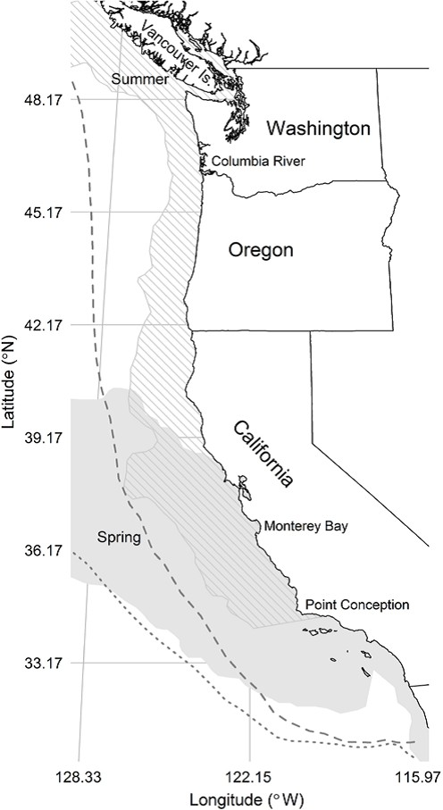
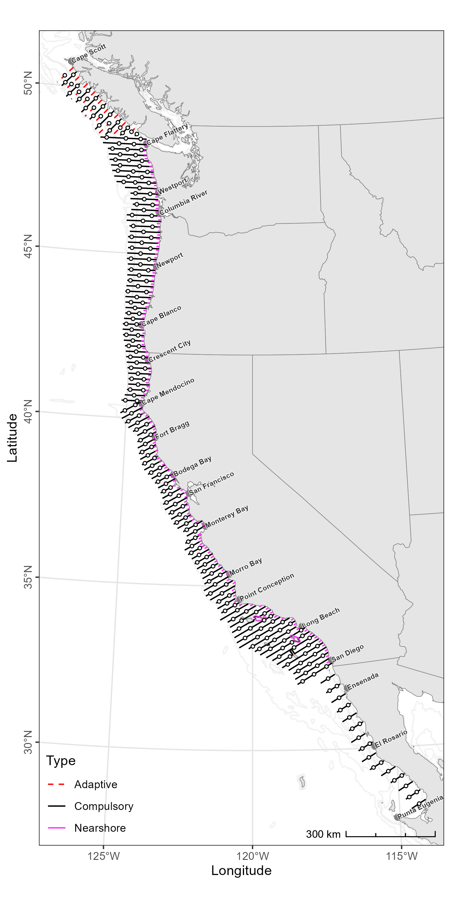

Survey Background
Who conducts the survey?
The California Current Ecosystem Survey is conducted by researchers at the NOAA Southwest Fisheries Science Center from the Fisheries Resources Division. The survey is also made possible by volunteers from additional NOAA line offices and science centers, universities, international partners, NOAA interns, and inter-agency employees.
Where does the survey take place?


Research objectives:
- Acoustically map the distributions, measure the species compositions and size-frequency distributions, and estimate the abundances and biomasses of CPS present in the survey area, e.g., Pacific Sardine Sardinops sagax, Northern Anchovy (Engraulis mordax), Pacifc Herring (Clupea pallasii), Round Herring (Etrumeus acuminatus), Pacific Mackerel (Scomber japonicus), and Jack Mackerel (Trachurus symmetricus)
- Characterize and investigate linkages to their biotic and abiotic environments
- Gather information regarding their life histories
- Compare the species composition and size distributions of trawls and near shore vessel purse seine sets.
Survey History:
The SWFSC’s ATM surveys of CPS in the CCE began in 2006 with a focus on the northern stock of Pacific Sardine. Quickly the annual surveys demonstrated valuable ecosystem insights. Since then, they have expanded in scope and objectives to include the larger forage-fish assemblage and krill. This evolution, and the migratory behavior of Pacific Sardine, serve to explain the present survey region and design.
“Collectively, these annual or bi-annual ATM surveys provide a unique insight into the dynamics of forage fshes in the CCE, including their distributions, abundances, interactions, and environments. For example, results from 2006 through 2013 indicate that Pacifc Sardine dominated the CPS assemblage, but their biomass was declining (Demer and Zwolinski, 2012; Zwolinski and Demer, 2012) and their seasonal migration was contracting (Zwolinski et al., 2014). Meanwhile, harvest rates for the declining stock increased (Demer and Zwolinski, 2017), and the total forage-fsh biomass decreased to less than 200,000 t in 2014 and 2015 (Figs. 36, 37). The U.S. fshery for Pacifc Sardine was closed in 2015 (National Marine Fisheries Service, 2015), and there were reports of mass strandings, deaths, and reproductive failures in Brown Pelicans (Pelecanus occidentalis3), Common Murres (Uria aalge), Brandt’s Cormorants (Phalacrocorax penicillatus), and California sea lions (Zalophus californianus4) (McClatchie et al., 2016), all of which depend on forage species. Since 2016, the forage-fsh biomass has increased, mainly due to resurgences of Jack Mackerel and the now dominant central stock of Northern Anchovy (Figs. 36, 37), whose biomass primarily (2,466,108 t, or 94% of the total estimate biomass) occurred in U.S. waters. Between the summers of 2018 and 2021, the biomass of the southern stock of Pacifc Sardine in U.S. waters has increased from 33,093 to 45,332 t.”(Stierhoff et al. 2024)
Code of Conduct
What are Codes of Conduct?
Codes of Conduct are voluntary sets of rules that assist creators, developers, and users of code and data with data protection compliance and accountability in specific sectors or relating to particular processing operations.
Codes can help organizations to ensure all participants follow best practices and rules designed specifically for their sector or processing operations, thus enhancing compliance and collaboration. They are developed and managed by an association or other body (the ‘Code Owner’) which is representative of a sector (or category of data controllers or processors), with the expert and sectoral knowledge of how to enhance data protection in their area.
Code of Conduct from the nmfs-opensci GitHub.
NOAA Fisheries Open Science Code of Conduct
This code of conduct was developed and adapted from the Atom code of conduct in October 2021.
Our Pledge
In the interest of fostering an open and welcoming environment, we as contributors and maintainers pledge to making participation in our project and our community a harassment-free experience for everyone, regardless of age, body size, disability, ethnicity, gender identity and expression, level of experience, nationality, personal appearance, race, religion, or sexual identity and orientation.
Our Standards
Examples of behavior that contributes to creating a positive environment include:
- Using welcoming and inclusive language
- Being respectful of differing viewpoints and experiences
- Gracefully accepting constructive criticism
- Focusing on what is best for the community
- Showing empathy towards other community members
Examples of unacceptable behavior by participants include:
- The use of sexualized language or imagery and unwelcome sexual attention or advances
- Trolling, insulting/derogatory comments, and personal or political attacks
- Public or private harassment
- Publishing others’ private information, such as a physical or electronic address, without explicit permission
- Other conduct which could reasonably be considered inappropriate in a professional setting
Our Responsibilities
Project maintainers are responsible for clarifying the standards of acceptable behavior and are expected to take appropriate and fair corrective action in response to any instances of unacceptable behavior.
Project maintainers have the right and responsibility to remove, edit, or reject comments, commits, code, wiki edits, issues, and other contributions that are not aligned to this Code of Conduct, or to ban temporarily or permanently any contributor for other behaviors that they deem inappropriate, threatening, offensive, or harmful.
Scope
This Code of Conduct applies both within project spaces and in public spaces when an individual is representing the project or its community. Examples of representing a project or community include using an official project e-mail address, posting via an official social media account, or acting as an appointed representative at an online or offline event. Representation of a project may be further defined and clarified by project maintainers.
Enforcement
Instances of abusive, harassing, or otherwise unacceptable behavior may be reported by contacting the project team. All complaints will be reviewed and investigated and will result in a response that is deemed necessary and appropriate to the circumstances. Further details of specific enforcement policies may be posted separately.
Attribution
This Code of Conduct is adapted from the Contributor Covenant, version 1.4, available at https://contributor-covenant.org/version/1/4